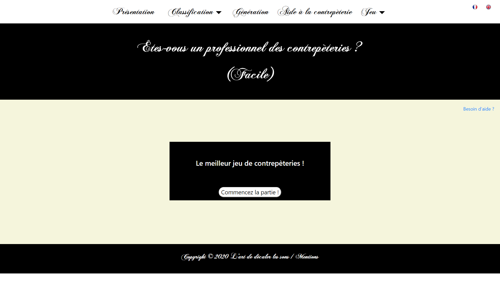
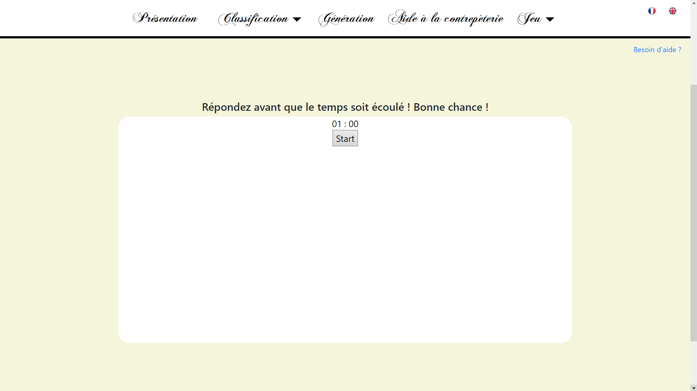
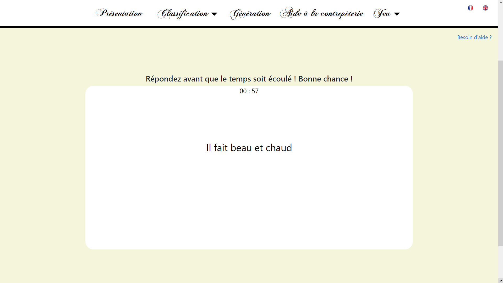
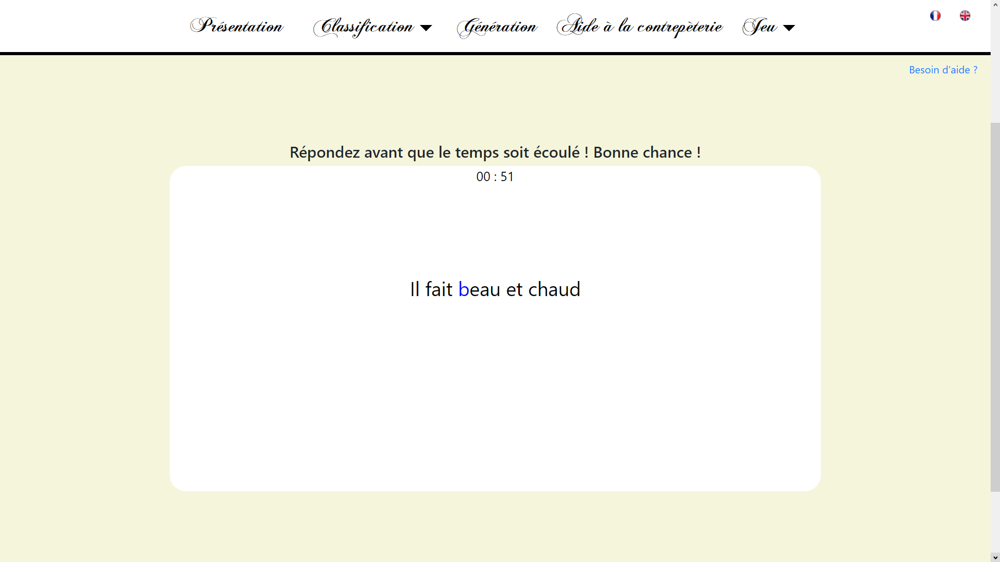
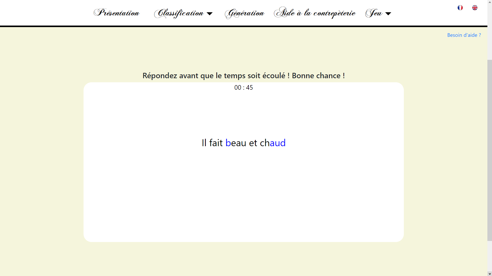
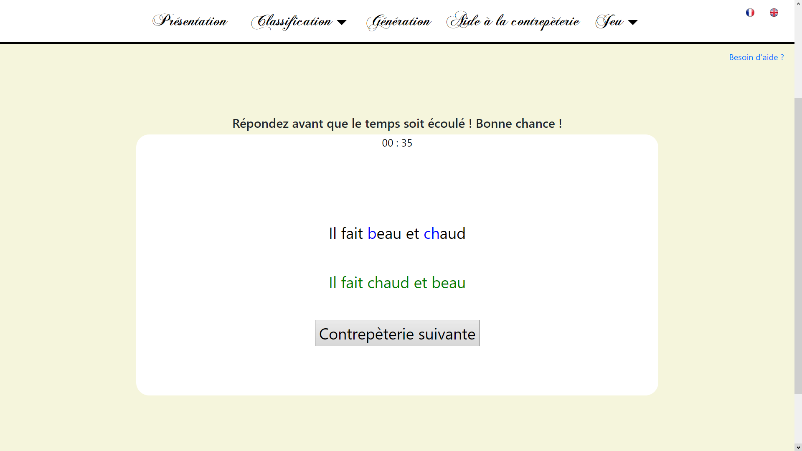

Vous voici sur la page de jeu. Pour commencer la partie, cliquer sur "Commencer la partie".
Une fois sur cette page cliquer sur "Start" pour lancer la partie. De ce fait, le timer commencera à s'activer et la première contrepèterie apparaitra.
Cliquer sur un bout de mot ou une lettre pour choisir le premier élément que vous pensez être le bon pour former une contrepèterie. Celui-ci apparaitra en bleu.
Cliquer maintenant sur un deuxième bout de mot qui apparaitra lui aussi en bleu.
Cette image vous montre le cas où vous n'avez pas trouvé la bonne paire. Vous devrez ainsi cliquer sur un des deux choix précédents au minimum pour déselectionner. Les éléments redeviendront noir et vous pourrez rechoisir une paire d'éléments.
Cependant si vous avez trouvé la bonne paire, la réponse s'affichera en vert et vous pourrez cliquer sur "Contrepèterie suivante" pour afficher une autre contrepèterie.
Bonne chance!
Retourner à la page de jeu